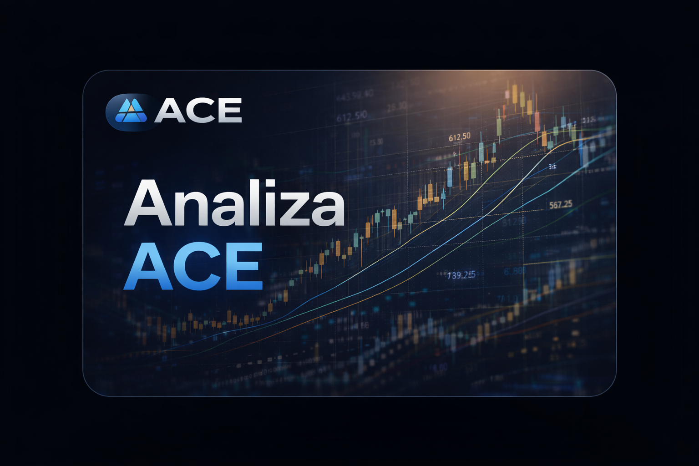

W tej sekcji publikujemy nasze autorskie spojrzenie na rynek. Znajdziesz tu nasze wykresy, zestawienia danych oraz wnioski, które przygotowujemy na podstawie informacji z całego panelu ACE.
Będziemy tu pokazywać przede wszystkim te sygnały, wykresy i relacje rynkowe, na które w danym momencie zwracamy szczególną uwagę przy analizie rynku zbóż, roślin oleistych, pasz oraz walut.

Wybrane wykresy z panelu ACE, które najlepiej pokazują bieżącą sytuację rynkową lub ważne relacje cenowe pomiędzy surowcami.
Tabele i krótkie podsumowania danych, które pomagają szybciej zrozumieć zmiany zachodzące na rynku i ich wpływ na koszty surowców.
Krótka interpretacja rynku z perspektywy ACE – co jest najważniejsze w danym momencie i na jakie sygnały warto zwracać uwagę.
Najważniejsze obserwacje wynikające z analiz, raportów i monitoringu rynków prowadzonych w ramach całego panelu ACE.